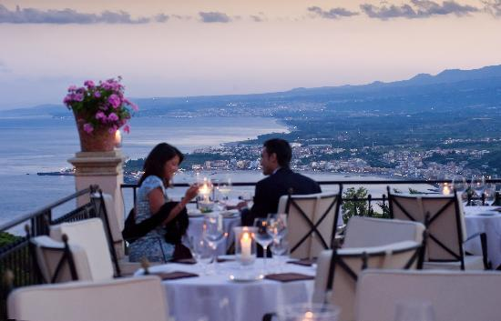

I saloni, le terrazze e i giardini, tutti con vista incantevole sul mare, sul Teatro Greco o su altre meraviglie di Taormina. Ideale per Meetings e ricevimenti. Prestigiose cornici dove assaporare piatti tipici fortemente legati alla tradizione siciliana. La qualità del servizio, la magia e la bellezza del luogo, fanno dei nostri ristoranti una location esclusiva, dove il cibo è uno ma non l'unico, degli ingredienti che le nostre splendide strutture offrono.
Prepariamo cibi gustosi già dagli anni '80. Specialità: pranzo e cena. Servizi: Adatto per gruppi, adatto per bambini, posti a sedere all'aperto, accettiamo prenotazioni, prenotazione non obbligatoria. Servizio impeccabile ai tavoli, Carta dei Vini "ampia scelta", Ristorante Italiano, Ristorante di pesce e carne. Le creazioni dei nostri Chef sono servite in ambienti unici che evocano lo splendore delle case aristocratiche siciliane.
